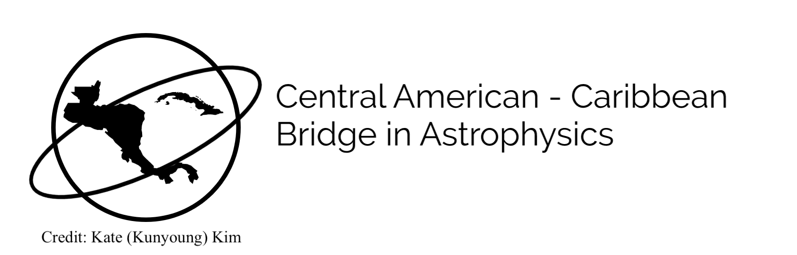
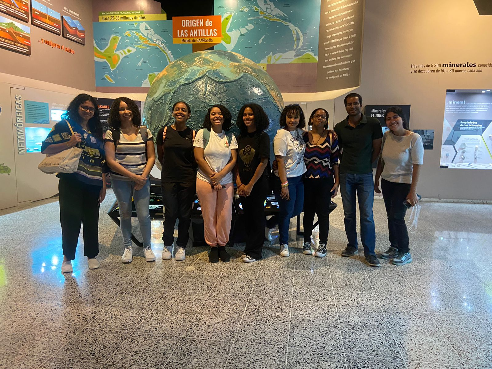
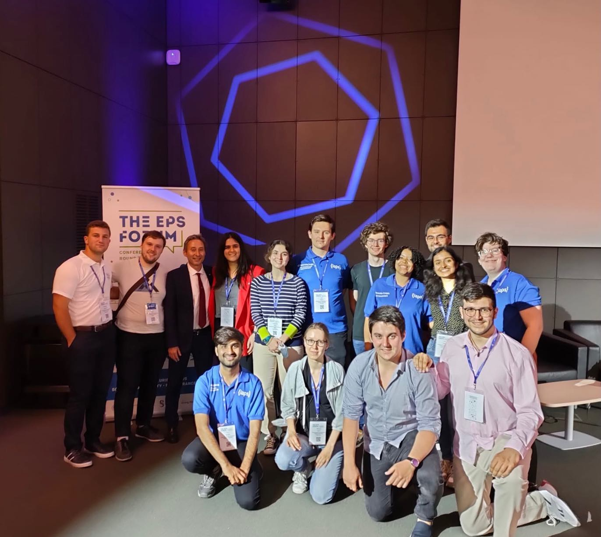

Outreach and Volunteer work
Central American - Caribbean Bridge in Astrophysics

After participating as an intern in the Central American - Caribbean Bridge in Astrophysics Remote research experience for undergraduate students I've mentored two students in their first research experience in astrophysics: Leiany De Oleo Rodríguez, "Investigating the Circumgalactic Medium" and Daniela Azucena Cardona Cuc, "Binarity in young star clusters across the entire mass range". I am currently a student coordinator for the CENCA-Bridge remote internship.
Month of Astronomy in the Dominican Republic

Since 2023 I've been organizing a series of talks and activities expanding a whole month related to astronomy to introduce high school and university students in the Dominican Republic to the world of astronomy. In 2024 I secured funding for two dominican students to conduct their first research internship in astronomy and to conduct a workshop on astronomical data analysis. Financed by the North American Regional Office of Astronomy for Development, the Heising-Simons Foundation and the International Association of Physics Students.
International Association of Physics Students

I was the Editor-in-Chief of the journal of the International Association of Physics Students (IAPS) 2025 edition. Previously, I was part of the executive committe of IAPS from 2021 to 2023 first as PR Manager and later as Secretary. During this time I was a member of the Affiliated Commission 5 which is the student branch of of the International Union of Pure and Applied Physics (IUPAP). I managed the relations between IAPS and IUPAP especially relating to communications.
Other volunteer positions
- Social Media Manager, Dominican Physical Society, 2023 - present.
- Teaching Committee Student Representative, Erasmus Mundus Joint Master degree in Astrophysics and Space Science, 2023 - 2024.
- President, Association of Physics Students of the Autonomous University of Physics Students, 2020.